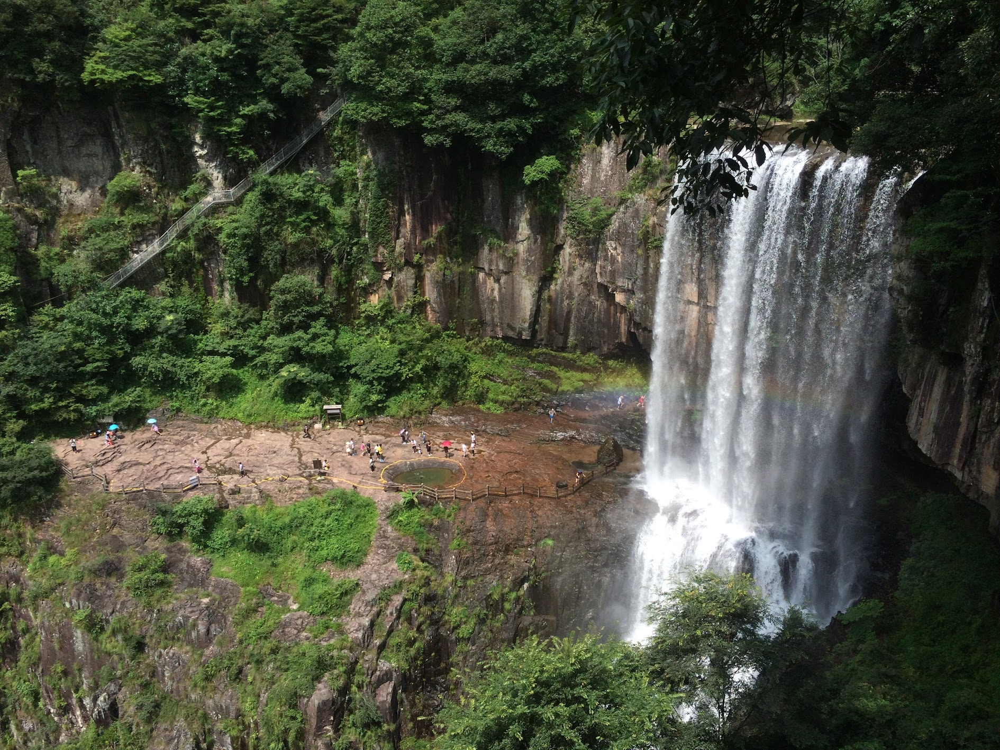
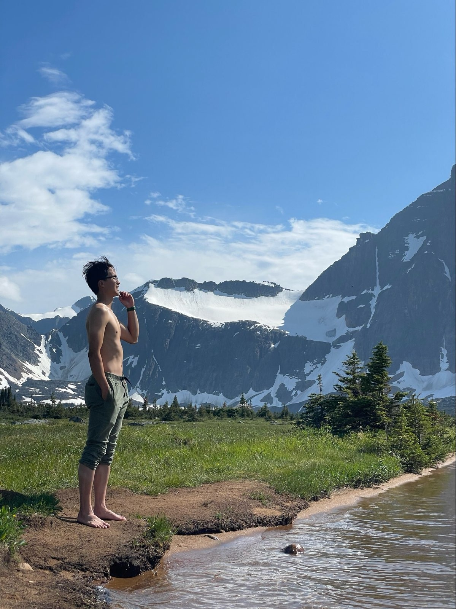
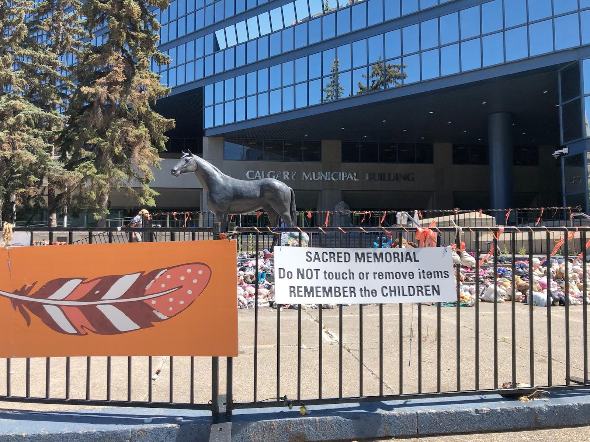
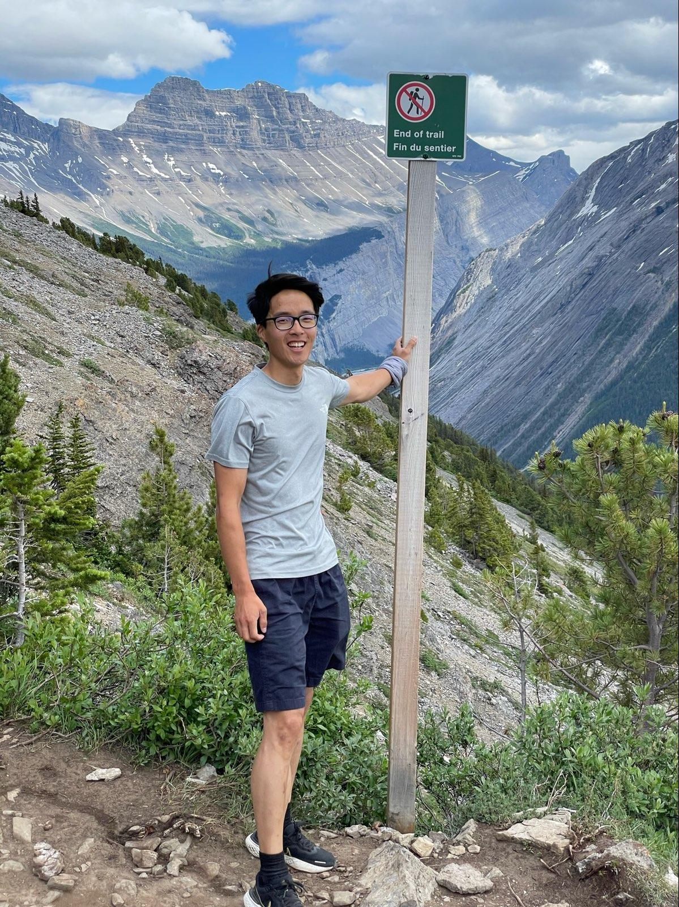

Travelling Nowadays
After spending time this year in Andalusia exploring the gorgeous mountains, learning about the historic period of Al-Andalus, and admiring beautiful architectural wonders it made me wonder what exactly it is I am looking for when I travel. I managed to get it down to my longing for the wilderness, to leave humankind behind me, and experience the incomprehensible that makes something great. Two articles have really helped me reflect and explore these thoughts: The Great Offline and The end of travel. For this post I will share my thoughts of travelling in Canada.
As a disclaimer, travelling is such a uniquely personal experience which people can shape and form to seek their love for the world. The previous articles linked feel like criticisms in the ways people travel. In a liberal society people’s norms and values come from their own search. This freedom is a curse and a blessing. It’s curse as it creates a certain emptiness where you have little to fall back on during life’s constant dilemmas. As these values are often tied to each other’s identity, they can become fanatical and polarising as we see in contemporary’s politics. In this post I try to explore these questions in our uncertain times for myself and only myself. However, the blessing is that this freedom allows us to do things differently, much faster than before. Ideas are able to exist and influence next to each other. It allows the person to figure out what they want. I want to acknowledge the many different ways of travel and this post merely tries to help me in shaping my way.
The Wilderness

The famous painting from Caspar David Friedrich titled “Wanderer above the Sea of Fog” (1818) has become my favourite piece of art as it so beautifully shows the allure of beautiful landscapes, especially at the top of mountains. There are most-likely thousands of articles written about this painting, the sublime, and its connection to German Romanticism but this video is my favourite. It beautifully shows Caspar David Friedrich’s other works, where humans feel small in these big ominous landscapes. There is a sense of solitude. It is what I experience when I am in the wilderness, surrendering to nature. It lets me know that we humans are part of Mother Earth connected to flora and fauna. Waking up in a forest to see the light scatter across the trees or see a gorgeous mountain with the stars hovering over it. To be humbled and experience the greatness of the forces of Nature is a beautiful experience. But it is in sharp contradiction with this Wanderer who seems to stand above it all. That is the feeling I get when I climb, when everything makes sense and you have an overview of what is happening in front of you. To be alone with yourself so you are able to find yourself. These are the best aspects of my travels.
However, just like with many things today there are contradictions. The concept of wilderness is a weird one, as eloquently put by Lauren Collee in The Great Offline:
In 1995, environmental historian William Cronon published “The Trouble With Wilderness; or, Getting Back to the Wrong Nature.” In it, he critiques the Western concept of “wilderness” as nothing but a fantasy that prevents us from meaningfully engaging with ecological systems. He argues that the idea of wilderness is beset by a central paradox: It supplies the “ultimate landscape of authenticity,” allowing for the purest expression of a human self, and yet it excludes human presence by definition (wilderness is wherever other humans are not). Wilderness thus remains a “profoundly human creation” — charged with individualism — in which we perceive not “nature,” but “the reflection of our own unexamined longings and desires.” … [wilderness] offer mythologies of ahistoricity and unaccountability, an escape clause from the dilemmas of a globalized world.
The article is a hard reminder that you cannot simply disconnect from the rest of humankind and our shared history. Not only does it shape a pessimistic viewpoint in which escapism is needed to become happy, it creates more individualistic wants and needs in a very individualist society. I want to address two themes: one of exclusivity and another one of history.
Exclusivity
Isn’t it weird? I want people to leave astounding places of nature alone so a small group of privileged people are able to have these amazing activities in the wild. Otherwise all vacations will slowly move to a Disneyland experience: manufactured enjoyment, queues, and hordes of people everywhere. And I felt this battle while in the Canadian Rockies, as everything becomes more accessible with car thus great viewpoints and hikes were full of people. In a way some experiences felt diminished. You enter a full parking lot, while you hear familiar European languages all around you, and you keep going from place to place because now everything is accessible. Yet, I was there doing the exact same thing everyone else was doing.
Yet it is precisely accessibility what created my love for the outdoors. As a child, the Netherlands was all I was accustomed to. Born and raised where everything was safe and well-maintained. A large grass field with trees was the closest I have been to nature. That all changed when I travelled to China for the first time. My perception of the world and how everything worked changed. A big part of it was that my family became bigger. I am sure I had been told that I had more family members but it is only when you are constantly surrounded by them, you feel that you have more family members. Not even extended ones but I suddenly had a brother and a sister. They had stayed behind due to immigration issues.

Most-likely connected in some deep psychological way I do not understand, the other big change was to experience the outdoors. My mom grew up in the mountains, hikes were not a way to get out of the city but rather needed to get to the essential services provided by the city. My granddad and dad used to cut trees up in the mountains, transport them down the self-made trails to make houses. While much of the standard of living had vastly improved since their youth (my siblings even had technology far more advanced than me: the laptop!), there was still an essence of it all around their birthplace. The feeling of home. However, I felt the outdoors call me the most the most when visiting the Baichuan Waterfall. Three waterfalls ranging from 200 meters to 12 meters on a simple and very accessible path, even a child could walk it, was the most spectacular thing I had seen. I got into such a high (or I drank some sacred mountain water) I had an outburst of energy going up and down the trail when we went back. This was the first time I fell in love with nature.

20 years later, the exact opposite gave me this ecstasy. The first few days in the Rockies we spent on this muddy, mosquito-infested, and sketchy river crossings backpacking trip in Tonquin Valley. This entire trail at most might have 30 people on them on a day, dropping more and more the farther you go, with only grizzlies, black bears, marmots, and caribou making up the rest of this population in this stunning hike. Because of the hard path, it felt like we earnt the beautiful views of the Ramparts and Amthyst Lake. The lake’s glacier cold water felt like a relief and a burst of energy just when we needed it. What was even better, there was nobody on our camp grounds at Surprise Point. If it hadn’t been for the mosquitoes I could have stayed there the entire trip. And be in bliss. Obviously a lot has changed from now and when I had my first waterfall experience, I have changed. But to truly let go of all of society’s expectations and chaos, it seems like I should go back to a time when I wasn’t burdened with this. That period can only be found in childhood. Where I was truly myself. Exclusivity was not necessary to enjoy the outdoors when I was a child, why is it now?
I suspected that one of the reasons I was so disconcerted by the narcissistic atmosphere of the selfie age was that it had exposed the solipsism of my own quest. For while I balked at ‘influencer’ superficiality, I also appreciated that my travel writing was just a more sophisticated version of the same tendency. I wondered how many other people might have been using travel in a similar, medicinal way – to curate a narrative, sometimes at the expense of subjective joy. - Henry Wismayer in The end of travel
Henry Wismayer’s faced the same challenge when the theatre of travel changed. With everything becoming more accessible and cheap almost everything becomes Disneyland. You do not need to know the local language, neither do you need anything else except for your smartphone, internet, and money to get around. It feels too easy, therefore, it does not feel like I earn to be there. Instead of being grateful for the hard work of the national and provincial parks offering everyone the same opportunity to become more connected to nature my ego got in the way. Yet, in this piece I found some solace. To deeper understand my wants and needs when travelling but also when I am not. I cut down the dichotomy of travelling and non-travelling experiences.
My reasoning being that if I can capture the joys and wonder of my travels in everyday life, I have a lot more to enjoy. With this, I erase the pressure of wanderlust on my travels. This narcissistic view of travelling I have shaped comes from discontentment of the standard routine in my everyday life. I work, I play, I sleep. You appreciate the things you do not have when touring the unknown but it also creates a vivid contrast to your day-to-day life, making it that much more exciting. But who is to say these experiences cannot be had in your day to day life? These two experiences I have had on my travels were of mnemonic quality, mostly because they are new, they create a longer and lasting imprint in the brain. I had them before in everyday life but I was not seeking for them. This is a more conscious shift in mindset.
A concrete step I want to take is to write more about the beautiful city I feel at home in: Rotterdam. By documenting and taking pictures of the interesting places and events of this city I can create new experiences for myself without bringing the burden that I have to do unique things across the world. I can do them right at home.
History
In another time, exclusivity meant something else. The wilderness I explored in Canada was created by European settlers marking down these territories as theirs. In The Great Offline the concept of wilderness is often used to escape our shared responsibility and its history. This concept is used to hide certain narratives which are important for the betterment of the person and land. This has been far from my intended goal but I can see why it is dangerous. By looking at it from a systematic point of view, the lack of consciousness diminishes willpower and the quality of policies for fair use of the wild.
Knowing history and culture of places outside my known world is why I travel. My cultural trip entering the world of Al-Andalus with its mosque-cathedral of Córdoba and the Alhambra reminded me that my Eurocentric view of history diminishes and neglects important pieces of history. How could we call the period between 500-1500 the dark ages in Europe? When Córdoba became the leading cultural and economic centre exploding in innovations and cultural exchange due to the relative oasis of religious tolerance of the three major religions living together. The Great Offline has reminded me that my interests can extend further to become actionable as well. I have been on the look for more, not only to challenge the Eurocentric view of history but to find narratives I can use and apply in modern day life. Here are the small pieces I learnt in Canada.
When Jasper Park Forest Reserve was created in 1907, later officially designated as Jasper National Park with the passing of the National Park Act in 1930, the natural landscape was initially understood as a backdrop for European settler recreation. Indigenous peoples were seen as obstacles to the enjoyment of nature. According to wilderness conservation policies at the time, Indigenous peoples were considered incompatible with nature and so couldn’t live in, hunt, or harvest within park boundaries. - Parks Canada Jasper National Park

The parks I have visited only exist as the First Nations and Métis were forcibly removed during their creation. Not only did they lose their land, they lost their way of living. The way Canada put in policies to assimilate the Indigenous people of these lands were shocking. They were a constant reminder of my privilege travelling these touristic vistas which should have been their lands for living, food, and gatherings.
My enjoyment of these glorious mountains were possible because the early European explorers “protected” this area. Erasing the lives and history of what came before. One big artefact of this is the way the places are named, often by colonists naming places after themself, children, pets, and employees.
More often than not, places were named according to the whims of surveyors, cartographers, and politicians of the day. This is in stark contrast to the deeply meaningful, personal, and often spiritual naming practices of Indigenous peoples. - Reclaiming Indigenous Place Names
A small way for me to remember the heritage of Indigenous people is to find and add the names used by First Nations in my climbing post. As a constant reminder of this event. I would like to thank the sporadic sources providing these Indigenous names1. However, I lacked a structural way to find the corresponding names, showcasing that the revitalization of these lands is very much starting. But this is not something that has happened a 100 years ago. The hurt and damages caused by these events can only be expressed in lifetimes. Canada is still dealing with the effects of harmful colonialism.
On my trip the Pope made an official apology on Canadian soil for the (sexual) abuse of Indigenous children in Catholic-run schools. From 1800s to the 1990s the Canadian government sent Indigenous children to government-sponsored schools to assimilate them into Euro-Canadian culture. The last one closed in 1996. An estimated 150,000 children were removed from their homes, separated from their siblings, and stripped off their culture. They would spend half a day at school and the other half working. The Pope, however, has yet to apologize for the Doctrine of Discovery2.
“The discovery doctrine, also called doctrine of discovery, is a concept of public international law that was promulgated by the Catholic Church and European monarchies in order to legitimize the colonization and evangelization of lands outside Europe.” - Wikipedia
The Truth and Reconciliation Commission in 2015 reported that at least 3200 children have died in these schools. In May 2021, the Tk’emlúps te Secwépemc First Nation used ground-penetrating radar technology at one residential school in Kamloops to discover the remains of 215 children. The reported number was only 50 in 2015. The suspected number of dead children are way higher, in the multitude of thousands.

“They washed away practically everything from our minds, all the things an Indian needed to help himself, to think the way a human person should in order to survive.” - (John Tootoosis, former student at Delmas school)
A common tactic seems to be targeting minorities especially when they are doing well, setting them back for generations again. The Peasant Farm Policy restricted the First Nations ability to participate in this “new” world. As they were performing quite well in agriculture due to their inherent knowledge of the lands, policies were created to restrict their types of tools, how much they grew and could sell. The policymakers applied Darwinism to argue that the Indigenous people were not evolved enough for contemporary methods of farming.
I was not only exposed to the policies against the Indigenous but also against the Chinese, such as the Chinese Head Tax between 1885 and 1923. As you have to pay more based on your ethnicity. It was Canada’s first legislation to exclude immigration on the basis of ethnic background. It got replaced with the Chinese Immigration Act in 1923 banning Chinese immigration and scattering families across the globe. This does not even include the harassment and rampant discriminations3 towards Chinese-owned businesses, as British Colombia passes laws restricting Chinese wholesalers, farmers, and storekeepers by restricting services regulating quantities and prices. With numerous attempts to limit businesses owned by non-whites claiming “White Canada Forever”4.
All across Canada, starting in the 1890s, cities and larger towns began to develop their own Chinatown districts. These areas were safe places for Chinese people to live, to find Chinese goods, and to meet socially. People who wanted to harass the Chinese would be less likely to do so when many Chinese people lived and worked close by and could fight back. Chinatowns often emerged in older, poorer parts of town which were less desirable. - History of Canada’s early Chinese immigrants

Nowadays, the policies against the Indigenous and the Chinese have resulted in an interesting mix in the big cities of Canada. I very vividly remember the first time I was getting food in Chinatown in Edmonton. Expecting Asian restaurants and well, a feeling of familiarity, I was completely unprepared for what I have seen. This view will stay with me for a long time: rows and rows of tents of the houseless on the streets with multiple people sleeping on the pavements of the parking lot of the shiny Rogers Place (stadium costing $604.5 million). It brought a feeling of unease to see the wealth disparity this clearly in front of me. The same situation uncovered in Vancouver, while I did not take a picture as I felt intrusive - I am sad I am unable to share this vivid image with everyone. A search on the internet might provide some context but I do not believe it truly captures what is happening in these cities. Chinatowns attract the houseless as these areas are often less developed, whereas the Indigenous people have lost their culture and families becoming houseless. While I can only speak for Edmonton and Vancouver, they are a stark reminder of big city problems. Ones I can work on.
While Indigenous people account for 4.3 percent of the population, they represent between 28 and 34 percent of the homeless shelter population - Homelessness in Canada

However, unlike The Great Offline I don’t believe this is the responsibility of everyone. For example, I am very limited in what I can do in Canada but fortunately I have decided to go to work in the Dutch public sector where I can apply these lessons. While I agree with the premise of The Great Offline, as we should strive for a view in which wilderness isn’t one where its void of humanity but rather allow the possibility of sustainable cohabitation. This perspective is one filled with more optimism than the one I held. Yet I disagree on a personal level, shirking responsibility applies to all forms of escapisms, and if I may, it sucks to burden people in their escapist pleasure. Everyone has their own way of helping and dealing with the world. People should have this freedom. Does this mean they can be respectless or ignorant towards the land they use? No. But it should not feel like the burden is solely on the thrill-seeking mountaineer who wants to venture into the wilderness. We all have our vices.
The End
In this post I shared my thoughts on exclusivity and mass tourism, while also diving into the history and accountability of these places I have visited. While writing this article I had a fun serendipitous moment in the train from Amsterdam to Rotterdam where a group of people discussed religion and morality. It reminded me that our moral compass in history has shifted a lot over the centuries and will continue to do so. While we lacked tolerance towards different religions, ethnicities, sex, and sexuality we have progressed a lot (this sentence comes with a disclaimer based on location, age, social group, and also recognizes the progress that can be made more). Even as these attitudes and policies have created artefacts and hurt visible now and for generations to come. We seem to be standing and working in other areas where we are actively expanding our moral compass again. To give rights to the voiceless. The way we treat animals, nature, future generations, to name a few, will also make us think how we travel and enjoy our vices. We still live in uncertain times, some might even call it the precipice, and one way to go through it is by acknowledging this ambiguity.

Certain topics of travel remain undiscussed. I have yet to finalize my thoughts on the contradictions of harmful travelling to enjoy our beautiful world, while my whole presence of being there (in)directly harms the land. I flew to Canada, I drove a car in Canada. I don’t think I felt comfortable doing this but feeling locked into this system, I don’t think I would be happy either not going. But this is it for now, I feel like I will write more about the other things I have seen in Canada when I can create a coherent story out of them. The only thing you really need to know is that you must visit a Ramen Danbo.
I enjoyed writing this blog post and using my travel journal to collect memories of these moments, it has made me a more conscious traveller. I have remembered way more than my usual trips. These posts were written by a very jetlagged person, who also decided to run a half marathon two days after he came back to get even more tired. Hopefully it still is coherent. Thank you for reading and have fun!

Footnotes
A small percentage can be found on wikipedia, blog posts about the area but there are also official databases (https://www.nrcan.gc.ca/indigenous-geographical-names-data/24317) and (squamishatlas.com) however I couldn’t link existing names with their indigenous name.↩︎
https://www.ibtimes.com/rescind-doctrine-indigenous-protest-pope-tours-canada-3590247↩︎
The Heathen Chinese and the houseless camp are from https://www.thecanadianencyclopedia.ca/en/article/racism and https://edmontonsun.com/opinion/columnists/gunter-rossdale-residents-unwilling-participants-in-homeless-experiment respectively↩︎
https://www.bac-lac.gc.ca/eng/discover/immigration/history-ethnic-cultural/early-chinese-canadians/Pages/history.aspx↩︎